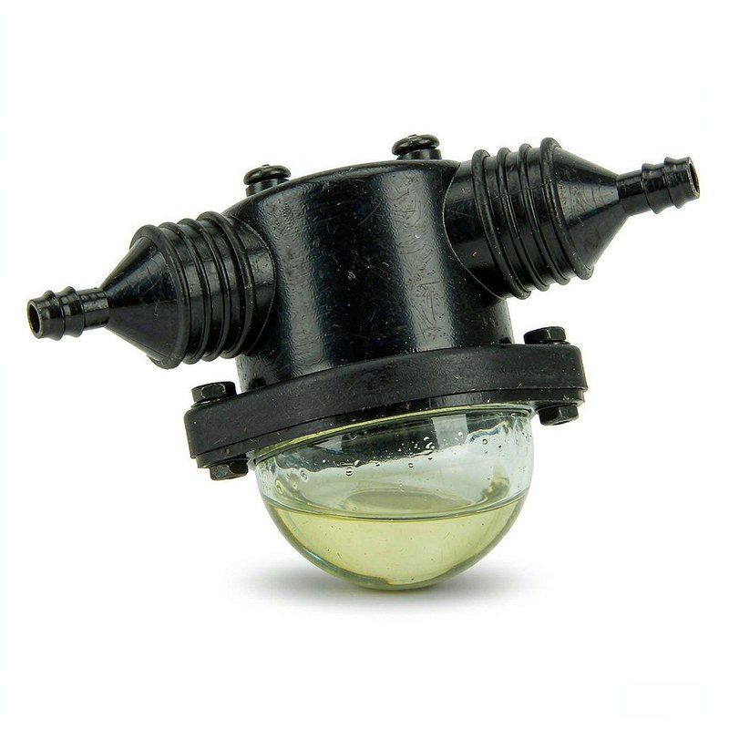

15106236486 belongs to the senp transmission spare parts transmission filter oem 02e 305 051c for vw beetle family in our catalog. Because the reference also appears on several Audi / Porsche / Volkswagen variants, check the suffix characters carefully: one letter off and you are quoting a different mounting configuration.
OE 15106236486 is a SENP Transmission Spare Parts Transmission Filter OEM 02E 305 051C For VW Beetle for Audi / Porsche / Volkswagen vehicles, stocked and exported wholesale by KingMay Auto Parts (Guangzhou, China). MOQ from 10 pieces, mixed orders welcome, quotations within one business day.
How 15106236486 decodes in the Hyundai-Kia catalog system. The prefix identifies the component family; the suffix carries model and variant information.
| Field | Value |
|---|---|
| Full reference | 15106236486 |
| Normalized (no hyphen) | 15106236486 |
| Prefix (family code) | 15106 |
| Prefix maps to | SENP Transmission Spare Parts Transmission Filter OEM 02E 305 051C For VW Beetle (this reference) |
| References sharing prefix 15106 | 1 in KingMay catalog |
| Numbering family | Hyundai-Kia 5+5 format |

Other part numbers frequently ordered together with 15106236486 by wholesale clients.
| OE Number | Component |
|---|---|
| 0002956507 | Clutch Slave Cylinder for MERCEDES-BENZ UNIMOG, T2/LN1 Platf |
| 0009931078 | Timing Chain for MERCEDES-BENZ C-CLASS (W204), SLK (R172), E |
| 0009976892 | V-Ribbed Belt for |
| 0012504104 | Clutch Pressure Plate for MERCEDES-BENZ G-CLASS, PUCH G-MODE |
| 0012950307 | Clutch Slave Cylinder for MERCEDES-BENZ O 400, SK, NG |
| 0012951307 | Clutch Slave Cylinder for MERCEDES-BENZ M-CLASS, PUCH G-MODE |
| 0012952707 | Clutch Slave Cylinder for MERCEDES-BENZ M-CLASS, PUCH G-MODE |
| 0012954007 | Clutch Slave Cylinder for MERCEDES-BENZ LK/LN2 |
Other part numbers in the transmission & drivetrain group that wholesale clients order alongside OE 15106236486. Grouping mixed references into one shipment is how most importers reach full-container freight thresholds.
Browse all 538 Transmission & Drivetrain OE references → · ← Previous in Transmission & Drivetrain · Next in Transmission & Drivetrain →
| Item | Detail |
|---|---|
| Export packing | Neutral carton, inner foam protection; custom labels on request |
| Lead time | 7 working days (stock) · 25-35 days (production run) |
| Shipping terms | FOB Guangzhou / Shenzhen; CIF & DDP negotiable |
| Payment | T/T, LC at sight for contracts; sample orders by T/T |
| QC documentation | Packing list + photo report + dimension check per shipment |
The questions below are the ones buyers raise most often about OE 15106236486 — fitment, fault symptoms, cross-references, pricing and export terms. Each answer is written to be quotable on its own.
Yes, if the alternate shares the same engineering envelope. Shortlist candidates from the Related OE References table, then check bolt pattern, electrical pinout and material grade. A difference in any of those three means it is a different part, not a substitute.
Noise normally traces to worn internal surfaces, a loose mount, a dry bearing or contact with a neighbouring part. Isolate it by reproducing the sound at a fixed speed, then compare against the reference photo for 15106236486 to confirm the right replacement.
Position depends on the platform. On most Audi / Porsche / Volkswagen applications the senp transmission spare parts transmission filter oem 02e 305 051c for vw beetle sits on the transmission & drivetrain assembly and can be reached from the engine bay or the underbody without removing the dashboard. Torque figures and disassembly order are given in the workshop manual for each model.
Start from the code cast or printed on the part you are removing — that is the authoritative source. If it is illegible, use the Applications table on the closest transmission & drivetrain reference and narrow by build year. Send photos and we will cross-check the number for you.
Wholesale pricing for 15106236486 depends on order quantity, surface treatment and packing. Standard references are quoted ex-Guangzhou with tiered pricing from 10 pieces upward — send quantity and destination port and a quotation usually returns within one business day.
Export packing is a neutral carton with inner protection; custom labels, barcodes and box specifications are available for volume orders. Shipments move FOB Guangzhou or Shenzhen, with CIF and DDP terms negotiable.
Buyers searching for OE 15106236486 most often land on these pages next.
Request a wholesale quote for 15106236486 through our contact page — most quotations return within one business day. All 15106236486 shipments leave with a packing list, photo documentation and QC report. Combined orders with other Hyundai-Kia references can share one container to cut landed cost. Payment terms are negotiable for established distributors; first-time buyers are welcome to start with a sample lot.
Send quantity + destination port. Quotations typically return within one business day.